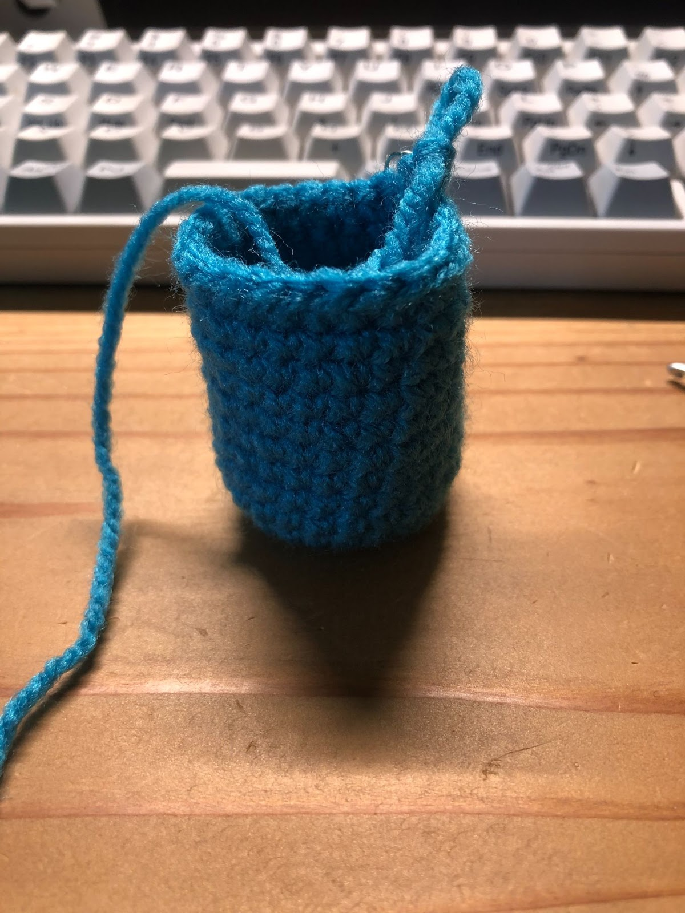
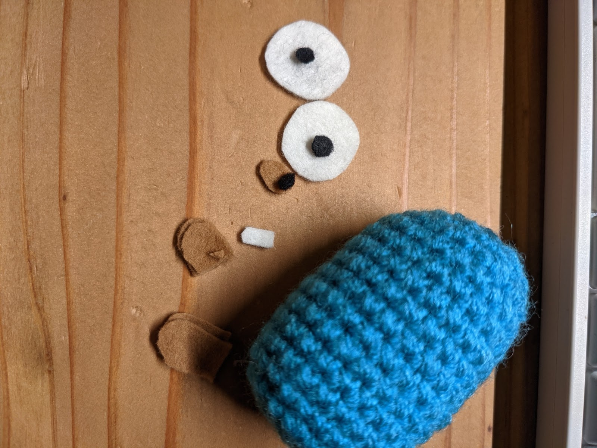

This Amigurimi is "Gopher".
Gopher, which is Go programming language character, was designed by Renée French.
The method of making Gopher's amigurumi described in this codelab belongs to miki and mihohoi.
・Yarn （Weight: worsted、Color: turquoise）
・Felt（Color: Write, Black, Beige）
・Stuffing（aptitude）
・Crochet hook 5/0(3mm)
・Marker
・Scissors
・Fabric bond
・Tweezers
1. scx8 in the yarn loop, tighten the loop [8sts]
2. 1ch, (2-sc inc) x 8, join with slip st to top of ch-1 [16sts]
3. 1ch, (scx1, 2-sc inc) x 8, join with slip st to top of ch-1. [24sts]
4. - 13 , sc in all 24 st [24sts]
14. (scx2, sc2tog) x 6, join with slip st to top of ch-1 [18sts]
15. (scx1, sc2tog) x 6, join with slip st to top of ch-1 [12sts]
16. sctog x 6 [6sts]
Fill the Body & Head with stuffing material.
Knitting the ears to the body
Left Ear:
Start at the 6st of the 13row (from the bottom) on the body.
2ch, hdc in the same stitch x 4, scx2
Right Ear:
Start at the 18st of the 13row (from the bottom) on the body.
2ch, hdc in the same stitch x 4, scx2
Cut out a piece of felt for each part.
White felt: Cut out two white eyes. Cut out two white eyes (2 cm diameter circles). Then cut out the teeth.
Black felt: Cut out the eyes and nose head.
Beige felt: Cut out the nose, hands, feet and tail.
